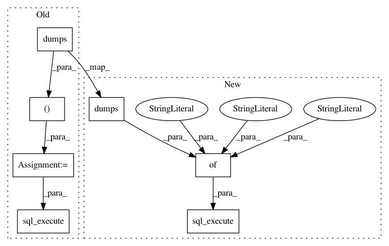

3bc3af6dab77a4d73549126fba1d5a2eaa20b04c,src/crosscat.py,CrosscatMetamodel,insertmany,#CrosscatMetamodel#Any#Any#Any#,652
Before Change
in zip(modelnos, thetas, X_L_list, X_D_list):
theta["X_L"] = X_L
theta["X_D"] = X_D
theta_json = json.dumps(theta)
parameters = (theta_json, generator_id, modelno)
total_changes = bdb.sqlite3.total_changes
bdb.sql_execute(update_theta_sql, parameters)
assert bdb.sqlite3.total_changes - total_changes == 1
class CrosscatCache(object):
def __init__(self):
After Change
theta["X_L"] = X_L
theta["X_D"] = X_D
total_changes = bdb.sqlite3.total_changes
bdb.sql_execute(update_theta_sql, {
"generator_id": generator_id,
"modelno": modelno,
"theta_json": json.dumps(theta),
})
assert bdb.sqlite3.total_changes - total_changes == 1
class CrosscatCache(object):
def __init__(self):
In pattern: SUPERPATTERN
Frequency: 3
Non-data size: 7
Instances
Project Name: probcomp/bayeslite
Commit Name: 3bc3af6dab77a4d73549126fba1d5a2eaa20b04c
Time: 2015-03-27
Author: riastradh+probcomp@csail.mit.edu
File Name: src/crosscat.py
Class Name: CrosscatMetamodel
Method Name: insertmany
Project Name: probcomp/bayeslite
Commit Name: 3bc3af6dab77a4d73549126fba1d5a2eaa20b04c
Time: 2015-03-27
Author: riastradh+probcomp@csail.mit.edu
File Name: src/legacy_models.py
Class Name:
Method Name: bayesdb_load_legacy_models
Project Name: probcomp/bayeslite
Commit Name: 3bc3af6dab77a4d73549126fba1d5a2eaa20b04c
Time: 2015-03-27
Author: riastradh+probcomp@csail.mit.edu
File Name: src/crosscat.py
Class Name: CrosscatMetamodel
Method Name: initialize_models